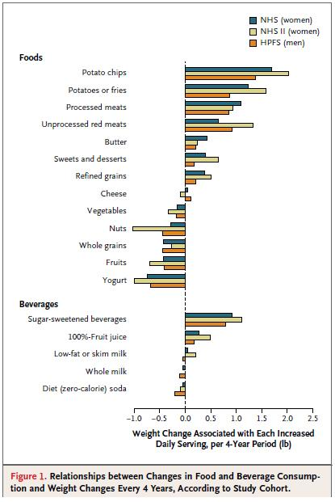

Forbruket av sukkerholdige drikkevarer som brus og fruktjuice har økt voldsomt de siste 50 årene. Kan inntaket av karbohydrater i flytende form være en av de viktigste årsakene til den økte forekomsten av overvekt, fedme og livsstilssykdommer? Det er etterhvert gjort en del studier på effektene av karbohydrater i hhv flytende og fast form, og her skal vi se litt på hva noen av disse har konkludert med.
Metter mindre
Det er foreslått at karbohydrater i flytende form metter dårligere enn samme energimengde i fast form. Et høyt inntak av flytende karbohydrater i form av brus, saft og fruktjuice kan derfor gjøre at du spiser mer, og derfor legger på deg. Vi har sett en kraftig økning i forbruket av disse drikkevarene, og rapporten «Utviklingen i norsk kosthold 2010» kan fortelle oss at det årlige inntaket av sukret brus har økt fra 9 til 60 liter per innbygger siden 1950. Siden 1977 har vi også hatt en firedobling i forbruket av fruktjuice, og en dobling i inntaket av saft og syltetøy.
Det må understrekes at det er noen svakheter med mange av studiene som har undersøkt denne sammenhengen. I en artikkel fra 2003 hevdes det at resultatene til nå har vært inkonklusive [1], noe som også nevnes i en annen studie fra 2007 [2]. Effekten av metthet måles ofte i hvor mye testpersonene spiser i det påfølgende måltidet. Det påpekes at de studiene som har konkludert med at flytende karbohydrater metter dårligere, ofte har hatt en lengre periode mellom disse måltidene, mens studier som bruker en kortere periode ofte har vist motsatte resultater. Her er det tydelig at det er flere ting som spiller inn på mettheten.
I en studie fra 2011 undersøkte forfatterne om dette kunne henge sammen med effektene på blodsukkeret og insulinutskillelsen, men forsøket viste at det her ikke var noen forskjeller mellom flytende eller faste karbohydratkilder [3]. Likevel mettet de faste karbohydratkildene mer enn de flytende gjorde.
En studie fra 2003 så på sammenhengen mellom totalvolum, energimengde og metthet, og konkluderte med at volumet på drikken man inntok hadde en større innvirkning på mettheten enn energimengden, og til og med en dobling av energiinnholdet på samme volum endret ikke disse resultatene [4].
I en studie fra 2007 sammenlignet forfatterne effekten av en måltidserstatter i flytende eller fast form, der energiinnholdet og sammensetningen av næringsstoffer var identisk. Her viste det seg at måltidet i fast form gav en mye høyere metthetsfølelse, og forfatterne konkluderte med at de to ulike produktene ikke kunne sees på som likeverdige alternativer [5].
En siste studie fra 2011 konkluderer med at karbohydrater i flytende form metter mindre enn karbohydrater i fast form [6]. Her så forfatterne også på hvordan flytende karbohydrater påvirker det totale energiinntaket i løpet av dagen, og konkluderte med at selv om det var en viss kompensasjon (man spiste mindre senere på dagen), så var ikke denne fullstendig, og totalt sett økte energiinntaket.
Drikkevarer assosiert med vektoppgang
En analyse fra 2011 viste at alle drikkevarer bortsett fra melk var assosiert med vektoppgang [7]. Fruktjuice hadde mindre sammenheng enn brus, men det forklares med at man vanligvis drikker brus i større mengder. Forfatterne skriver at:
Consumption of 100%-fruit juice was associated with weight gains of smaller magnitude, possibly because these beverages may be consumed in smaller servings than are sugarsweetened beverages or in different patterns (i.e., single rather than multiple servings).
Og deretter at:
Overall, our analysis showed that changes in the consumption of all liquids except milk were positively associated with weight gain;our findings for high-carbohydrate beverages were consistent with those for refined carbohydrates and starches consumed in foods.
Her er en figur fra analysen:

Hvor fort spiser/drikker du?
I en studie fra 2011 foreslår forfatterne at grunnen til at flytende karbohydrater metter dårligere er at hastigheten på inntaket er høy per energimengde [8]. Med dette menes det at det går fortere å drikke en viss energimengde enn å spise den samme energien. De skriver at:
This idea fits with the concept of the taste system as a nutrient-sensing system that informs the brain and the gastro-intestinal system about what is coming into our body. With liquids, this system is bypassed. Slower eating may help the human body to associate the sensory signals from food with their metabolic consequences. Foods that are eaten quickly may impair this association, and may therefore lead to overconsumption of energy, and ultimately to weight gain.
Det kan synes som om at jo lengre maten er i munnen, jo sterkere stimuleres metthetsfølelsen. Dette kan forklare hvorfor matinntaket blir lavere dersom man spiser sakte. Dette forklares med at seonsorer i munnen sender signaler til hjernen om hvilken næring som er på vei. Når energien inntas i flytende form får ikke dette systemet fungert som det skal, noe som fører til at det totale energiinntaket øker. Suppe har vist seg å gi god metthet og gir en reduksjon i det totale energiinntaket, noe som passer fint med teorien om hastigheten på inntaket, som er mye lavere for suppe enn for energiholdige drikkevarer.
Konklusjoner
Selv om studiene vi har per i dag ikke er nok til å gi en endelig konklusjon, er det grunn til å anta at inntaket av karbohydrater i flytende form bør begrenses, spesielt om du vil ned i vekt. Flere studier har vist at inntak av flytende karbohydrater øker det totale energiinntaket, siden man ikke kompenserer fullstendig for den ekstra energien. Dette passer fint med statistikken over inntak av disse drikkevarene og økningen i forekomsten av overvekt og fedme.
En teori for hvorfor flytende karbohydrater metter dårligere enn karbohydrater i fast form handler om hvor lang tid man bruker på å få i seg en viss mengde. Generelt går det raskere å drikke denne energimengden enn å spise den, noe som også støtter opp om teorien om at å spise sakte øker metthetsfølelsen.
I våre råd for bedre helse lyder et av rådene: Vær forsiktig med flytende energi.
Alle er enige i at sukker ikke er bra for oss. En halv liter brus inneholder ca 50g sukker, og fruktjuice inneholder tilsvarende mengder.
Innholdet av vitaminer og mineraler er også lavt eller fraværende i flytende karbohydratkilder. Om du spiser frukten i stedet for å drikke fruktjuice får du i deg betydelig mer av disse næringsstoffene, i tillegg til en del fiber som reduserer de negative effektene av sukkeret.
Denne videoen illustrerer på en fin måte hvor mye sukker som finnes i en boks brus:
Referanser:
Almiron-Roig E, Chen Y, Drewnowski A: Liquid calories and the failure of satiety: how good is the evidence? Obes Rev 2003, 4(4):201-212.
Drewnowski A, Bellisle F: Liquid calories, sugar, and body weight. Am J Clin Nutr 2007, 85(3):651-661.
Ranawana V, Henry CJ: Liquid and solid carbohydrate foods: comparative effects on glycemic and insulin responses, and satiety. Int J Food Sci Nutr 2011, 62(1):71-81.
Bell EA, Roe LS, Rolls BJ: Sensory-specific satiety is affected more by volume than by energy content of a liquid food. Physiol Behav 2003, 78(4-5):593-600.
Tieken SM, Leidy HJ, Stull AJ, Mattes RD, Schuster RA, Campbell WW: Effects of solid versus liquid meal-replacement products of similar energy content on hunger, satiety, and appetite-regulating hormones in older adults. Horm Metab Res 2007, 39(5):389-394.
Pan A, Hu FB: Effects of carbohydrates on satiety: differences between liquid and solid food. Curr Opin Clin Nutr Metab Care 2011, 14(4):385-390.
Mozaffarian D, Hao T, Rimm EB, Willett WC, Hu FB: Changes in diet and lifestyle and long-term weight gain in women and men. N Engl J Med 2011, 364(25):2392-2404.
de Graaf C: Why liquid energy results in overconsumption. Proc Nutr Soc 2011, 70(2):162-170.